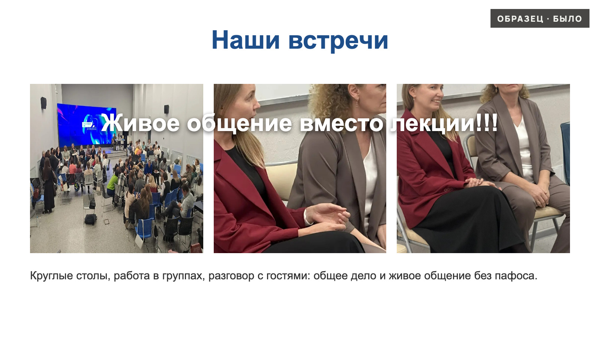
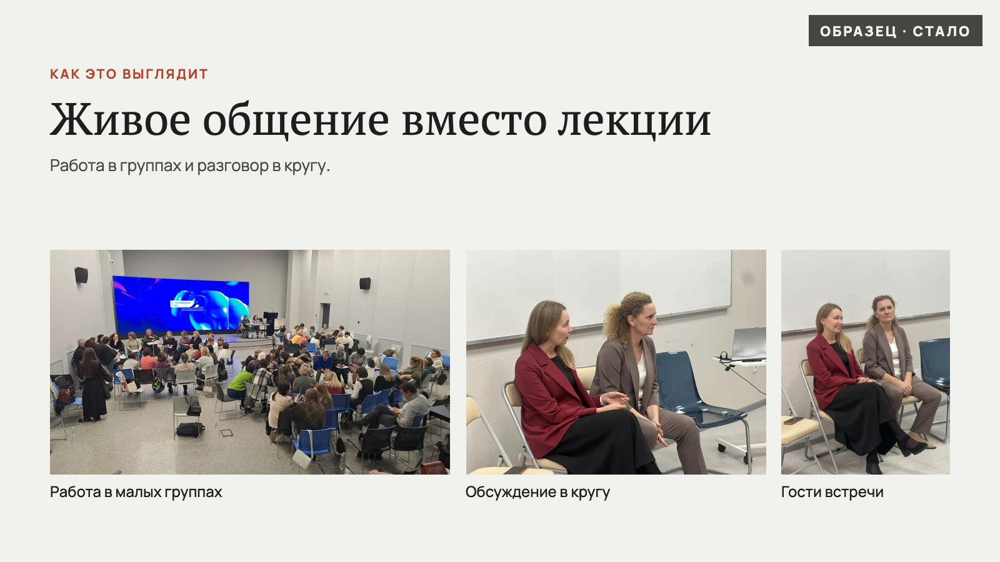
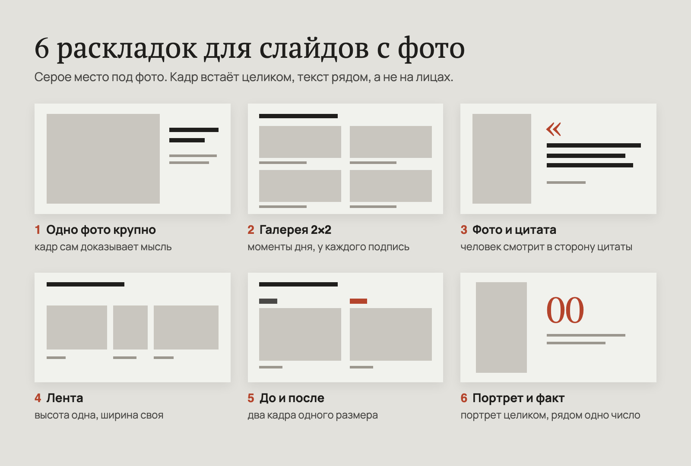
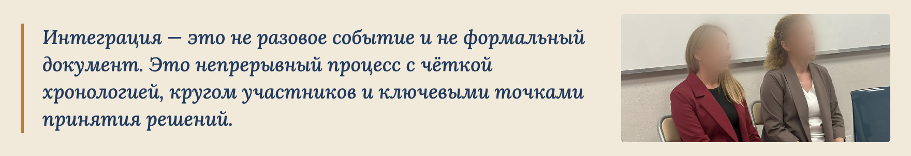

Разбор · слайды с фото
Оформление слайдов с фото: 6 раскладок, в которых никому не режут голову
Фото ставьте целиком, текст рядом со снимком, а не на лицах, у каждого кадра подпись. Потом выберите одну из шести раскладок. Ниже всё на настоящих фото и заготовка PowerPoint.


Знакомо: «вставила фото, а на слайде у всех отрезаны макушки»? Я фотограф и вижу такое сразу. Виноват не шаблон, а рамка, которая режет людей.
Откройте слайд с людьми и проведите взглядом по верхнему краю каждого фото. Край идёт по чьей-то голове? Рамка режет.
Фото сорок, а слайдов десять? Пришлите их мне, отберу и разложу.
Три правила фотографа
- Не растягивать. Размер фото меняйте только за угол, иначе люди станут толще или выше. Проверка: лицо на слайде такое же, как в телефоне.
- Не резать людей рамкой. Квадраты и рамки шаблона срезают макушки, руки и крайних людей. Мало места: уменьшайте фото целиком. Обрезаете: не по запястьям и коленям, и оставьте воздух над головой.
- Не класть текст на лица. Текст ставьте рядом со снимком или на спокойную часть кадра: стену, небо, пол. Лучше туда, куда смотрит человек на фото: взгляд зала пойдёт за ним.
И подпись к каждому фото: кто на нём и что происходит. Фото без подписи зал разглядывает, фото с подписью понимает.
6 раскладок для слайдов с фото
1. Одно фото крупно. Один кадр сам доказывает мысль: полный зал, человек за делом. Фото на две трети слайда, рядом заголовок-вывод и подпись.
2. Галерея 2×2. Несколько моментов одного дня. Четыре фото с равными промежутками, под каждым подпись в строку. Больше четырёх не ставьте: с дальних рядов это пёстрые пятна.
3. Фото и цитата. Человек на снимке сказал важное. Фото слева, цитата крупно справа, под ней имя. Пусть человек смотрит в сторону цитаты. Цитата только настоящая и с разрешения.
4. Лента. Ход событий: до, во время, после. Три-четыре снимка в ряд, высота одна, ширина своя. Порядок не меняйте: в ленте он и есть смысл.
5. До и после. Работа видна глазами: ремонт, укладка, стенд. Два фото одного размера, по возможности с одной точки. «После» не делайте крупнее «до».
6. Портрет и факт. Нужно представить человека. Вертикальный портрет целиком на трети слайда, рядом крупно одно число или факт.
Снимки разной формы в одном ряду ставьте так: высота у всех одинаковая, ширина своя. Тогда ни один кадр не режется.

Заготовка «6 раскладок для слайдов с фото»
Скачать заготовку PowerPoint, 8 слайдов: шесть раскладок, как вставить фото и проверка перед показом. Открывается в Google Slides и Keynote. Без регистрации.
Как пользоваться: удалите серую рамку, вставьте на её место своё фото и тяните его только за угол.
Фото много, а какие ставить, непонятно? Пришлите снимки и текст, отберу и разложу. Черновик увидите до оплаты.
Как отобрать 10 фото из 40
- Уберите брак: смазанные, тёмные, с закрытыми глазами.
- Из похожих оставьте один, где лучше видны лица.
- Спросите у снимка, что он доказывает. Полный зал, работу руками, результат? Ничего не доказывает: уберите, даже если кадр красивый.
- Проверьте, согласны ли люди в кадре, особенно дети. Согласия нет: возьмите кадр без лиц.
- Разложите: самый сильный кадр крупно, моменты одного дня галереей, ход событий лентой.
Кейс: 9 фото из 21 для доклада
Анна Комарницькая, психолог и преподаватель, готовила доклад к XIV Международному симпозиуму медицинских антропологов в Москве, сентябрь 2026 года. Слайды собирали за сутки. Фото со встреч Анна присылала по ходу работы, всего 21.
- На слайды пошли 9 снимков, остальные повторяли друг друга.
- Два кадра встали по одному рядом с главными мыслями доклада.
- Четыре стали галереей «Живое общение вместо лекции», у каждого подпись.
- Три легли лентой под дорожной картой в конце.

Что получилось. 17 слайдов со схемами и фотографиями и памятка для зала. Успели к докладу.
«Я обратилась к Алёне, и она мне всё сделала. Спасибо большое! Я под таким впечатлением, это просто счастье, словами не передать. У меня завтра конференция, уровень высокий, а у меня один доклад, и получилось так красиво!»
Анна вернулась к нам уже пятый раз. Как из того же реферата получились схемы, рассказываю в разборе «3 ошибки, из-за которых слайды трудно читать».
Не хотите разбираться сами
Фото лежат в телефоне сотнями, а выступать послезавтра? Пришлите их мне: отберу снимки глазом фотографа и разложу по слайдам. Черновик собирает помощник (ИИ), а каждый слайд я проверяю своими глазами.
от 1 500 ₽
- Презентация до 10 слайдов.
- Сначала черновик, оплата после него: посмотрите, понравится ли, и только потом платите.
- Редактируемый файл PowerPoint в каждом заказе: дату или слово поправите сами, без меня.
Откроется бот-приёмщик в мессенджере MAX: он спросит про выступление и назовёт цену. Удобнее Telegram? Напишите мне туда.
Частые вопросы
Сколько фото можно поставить на один слайд?
Обычно одно, самое большее четыре. Хочется больше: сделайте два слайда-галереи. Мелкое фото на экране никто не разглядит.
Это работает в Google Slides?
Да. Правила те же: тянуть только за угол, не загонять в чужую рамку, подписывать. Заготовка тоже открывается в Google Slides.
Что делать, если фото плохого качества?
Поставьте его меньше, в галерею или ленту: в маленьком размере недостатки заметны меньше. На весь слайд тёмное или мутное фото не растягивайте.
Вопрос вам
Какой слайд с фото у вас сейчас не складывается? Проверьте его по трём правилам. Не вышло: пришлите фото, соберу за вас.
Алёна Прасолова. Фотограф, собираю презентации к выступлениям для педагогов, психологов, мастеров и малого бизнеса.
Ещё разборы
- 3 ошибки, из-за которых слайды трудно читатьАбзац, заголовок-тема и каша в оформлении. Чек-лист перед выступлением.
- Оформление слайдов с текстом: 5 схем, в которые превращается любой абзацКарточки, лента, колесо, цепочка и таблица: как выбрать свою за 10 секунд.
- Сделали презентацию через нейросеть, а вышло скучно: 3 правкиВывод вместо темы, схема вместо списка, своё вместо общего. Два готовых запроса.
- Презентация для психолога к конференции: 17 слайдов из реферата за суткиНастоящий кейс по шагам, скелет доклада на 15 слайдов и памятка для зала.